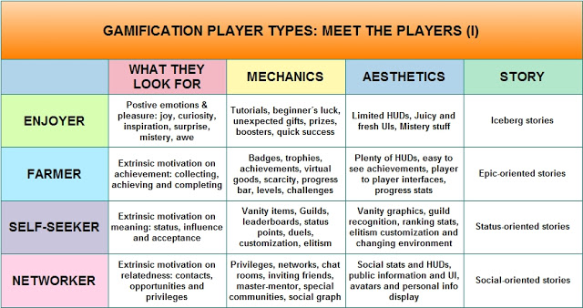
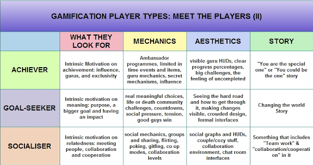

CS3005 Week 2 - Formal Elements
Four Freedoms - Scot Osterweil
Freedom to explore
- RPGs in the 1990s tended to only have one storyline and it was very difficult to explore.
- However, games such as Minecraft allow a greater amount of player exploration.
Freedom to Fail
- Failure has to be present in a game as there is no challenge without it.
- A good game will manage failure in an effective and fair way.
Freedom of Identity Play
- Good customization options allow players to shape their character or environment to match their desires.
Freedom of Effort
- This is sometimes difficult when designing a game.
- Players will play games a different amount.
- Games should be tailored to support soft or hard play.
- Someone who plays for six or seven hours a day will have different goals to someone who is playing casually
- Some players may prefer support roles and building while others will prefer combat-based gameplay
- Games such as Minecraft allow players to playas much or as little as they prefer and still gather enjoyment from the game
Players
Players voluntarily accept the rules of the game when they start playing and games are designed for this. Players will perform actions in game that they wouldn't do in real life, such as brutally murdering pigs in Minecraft.
Requirements in Games
- Games may create excitement or may be more thought-inspiring.
- Excitement may involve more effects and lighting while thought based may involve more dialogue
Lens of the Player
- Designers need to think about who their audience is.
- What do players like and expect to see in your game?
e.g. lots of mechanics, lots of story
Onboarding & Invitation to Play
Onboarding
- Onboarding refers to the way that media will try to break away from reality and entice viewers into a temporary world, such as in theatres or football stadiums.
- For board games or card games the enticement is in the social aspect of the game e.g. setting up.
- For video games, this process is much more technical.
Unique Interactions
- Games such as guitar hero will attempt to achieve onboarding through unique interaction - you receive a specialized controller and this makes it stand out from the crowd.
- Many games on the app store may only use creativity in a traditional way.
Managing Player Number and Player Roles
- Games designed for one person are very different from multiplayer games.
- Within multiplayer games there are also big differences in design between large MMO style games and games that feature two or three players such as Monopoly.
- Most games have specific roles for specific players.
Striking a balances in factors such as progression and decision-making requires careful consideration. If all players pick the same role you lose dynamics and complexity within your game.
Modelling Types of Players: The Four-Player Model
The four player model is conceptually based on the types of players found within a multi-user dungeon or MUD. It has been superseded by newer models that are attributable to a more broad genre of games.
- States that there are four types of players within a typical game.
- Each player type is defined differently and engages differently.
Killers
- Killers are defined by a focus on rank and direct competition with peers.
- Killers are engaged by ranking and leaderboards.
Achievers
- Achievers are defined by a focus on attaining status and achieving pre-set goals quickly and/or completely.
- Achievers are engaged by completing achievements in game.
Socialites
- Socialites are defined by a focus on socialising and developing a network of friends and contacts.
- Socialites are engaged by friend lists, newsfeeds and chat.
Explorers
- Explorer are defined by a focus on exploring and a drive to discover the unknown.
- Engaged by obfuscated or not well-defined achievements.
Modelling Types of Players: The Seven-Player Model
The seven player model is different in that it distinguishes between extrinsic and intrinsic players.
All player types are equal but not all games will be tailored to all player types, and that is okay.
Extrinsic Players
Extrinsic players are motivated by things offered to them within the game such as achievements and collections. Extrinsic players include enjoyers, farmers, self-seekers and networkers.

Intrinsic Players
Intrinsic players are motivated much more by themselves and place a greater focus on building connections and collaborating. Intrinsic Players include achievers, goal-seekers and socialisers.

Player Interaction Patterns
Single Player vs. Game
- Players compete against each other.
- May use puzzle or other structure to solve conflict.
- Can be multiplayer.
- Emphasis on interaction between players.
Multiple Players vs. Game
- Multiple players compete against a game but do not cooperate in a meaningful way.
- Interaction between players not required.
- Actions are not directed towards each other.
- Includes games such as Bingo or Farmville.
Player vs Player
- Two players compete directly without direct interaction with the game itself e.g. Chess, Tennis.
- 2-player fighting games also fall into this category and are the classic example.
- Highly competition-focused and direct.
Unilateral Competition (Team vs Individual)
- Two or more players compete against one player.
- This is less common but a classic example is Among Us.
- Structure combines cooperation and competition
Multilateral Competition (Team vs Team)
- Three or more players directly compete with each other.
- Does not necessarily require large number of players.
- A limited number of players may be a very effective gameplay mechanic for these types of games.
- Board games with this pattern are incredibly popular.
Cooperative play
- Multiple players compete against a game and cooperate.
- Many games have cooperative quests or themes
- Includes MMORPGs or FPS
- Competitive play and cooperative play cater to different player audiences
Team competition
- Two or more groups compete against each other
- Includes games such as clash of clans
- Different interaction patterns to the other games
Objectives
Objectives define what the player is supposed to accomplish within the rules and give the player a motive to strive for. If the objectives are too easy, they may not be as compelling for players. Different players may also have different in-game objectives.
Setting the Tone
Purpose of Objectives
Objectives set the tone of the game e.g. building the tallest tower is very different to combat. These objectives will affect not only the formal element system but also the dramatic aspects of the game.
Examples of Objectives
- Mechanical objectives e.g. pushing, escorting something
- Accumulating in-game money
- Killing other players
- Escaping something
- Surviving in a dystopia or horror scenario
Defining Game Objectives
Objectives should be challenging but not extremely difficult/impossible as this will frustrate the player (extremely difficult games may, however, be targeted to a very specific subset of players)
objectives will often depend on the game genre, some games are great even with just one objective.
Procedures & Rules
Procedures
Procedures are methods of play and actions that players can take to achieve the game objectives.
Types of Procedures
- Starting procedures that allow you to put the game into play
- Progression of action procedures which are ongoing throughout the game
- Special actions (conditional to other elements or game state)
- Resolving actions (actions that bring the game to a close)
Board games will typically have procedures outlined within the rules, whereas digital games will have procedures integrated into the control section.
Environment Limitations
These limitations are important to consider when defining game procedures.
- What type of inputs and outputs are available to the player?
- Will players have a keyboard and mouse?
- Will players be sitting close to a screen or far away?
Rules
Rules define objects and allowable actions. They can define objects and concepts, they can restrict certain actions, or they can determine effects.
Rules are less about technical limitations and more about limitations put in place by the designers.
Managing Game Rules
It is important to ensure that rules are enforced and that players can learn them, as well as determining what rules work best in certain situations, and any patterns to rule sets.
- Too many rules may make a game too difficult to understand.
- However, unstated and unclear/inconsistent rules may confuse players.
- Unstated rules may, however, add to the excitement to a game.
- Rules can be explained in the manual or be implicit in the game itself.
Rule and Object Interactions
By triggering effects, it is possible to introduce variation in gameplay, or get the gameplay back on track. e.g. Players respawning at a sensible point (not straight back where they died) with sufficient health after a death is a very effective way to balance player satisfaction.
- Game objects have unique status and meaning that is different from the real world.
- Objects are made of a fairly complex set of variables to define their overall state.
Resources
Resources play a very similar role to the real world. They are assets that can be used to accomplish a goal.
- Resources should have both unity and scarcity within the game system to be effective
- Designers will often copy existing games when it comes to resource management. Lots of games have the same types of currency.
- Resources applied in different or creative ways can create a more interesting game.
Examples of Resources
Lives
Common in arcade games.
Units
Examples include troops or chess pieces. Units can be constant or evolving and they can increase the complexity of a game, especially if they are upgradable.
Health
Different games will handle health very differently. Action games will make use of med kits to ensure speed of restoration is quick. Other games might require travelling to a certain part of the world to restore health.
Currency
Plays the same role as it does in real life.
Actions
Can also be considered resources, especially if certain actions are made scarce.
Power-ups
Enhance player strength or speed.
Inventory
Can restrict the number of other resources a player can carry.
Special Terrain
Often used for strategy games.
Time
Can be a resource, such as in Five Nights at Freddy's.
Conflict, Boundaries & Outcome
Conflict
Conflict is designed into games a co-product of players trying to complete objectives within the constrains of rules and procedures.
Conflict Examples
- Obstacles
- Opponents
- Dilemmas (e.g. choosing between where to spend currency)
Boundaries
Boundaries mean something very specific in digital games: separating what is part of the game from what is not part of the game.
This is particularly relevant for AR games such as Pokémon Go where the boundaries between real life and the game may start to blur.
Outcome
The outcome must be uncertain to hold the attention of the player
Players may be subjected to a winning scenario or may not have an ending and reward the player in other ways.